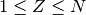

guywires – Guy Wires for Antenna Towers/Masts¶
Legacy Introduction¶
Page 1:
GUY WIRES for Antenna Towers and Masts by George Murphy VE3ERP
To support a typical Ham beam antenna this program calculates:
- Number of guy wire sets required for any given tower/mast height.
- Height above ground for the attachment of each set of guy wires.
- Distance from the tower/mast to the guy wire anchors.
- Quantity and length of non-resonant segments in each guy wire.
- Total length of each guy wire.
The calculations assume three wires per set spaced 120° apart, with
three anchor points - each anchoring one wire of each guy wire set.
TYPICAL GUY WIRE
( ■ = Attachment Fitting )
( ∞ = Egg Insulator )
│«─────────────── Centre Section ───────────────»│
│ (may need to be cut into separate non-resonant │
│ segments connected by egg insulators) │
Tower ■──────∞───────────────∞────────────────∞───────────────∞──────■ Anchor
»│30 cm.│« slope down ──> »│30 cm.│«
»│12 in.│« »│12 in.│«
│«────────────────────────── Length ──────────────────────────»│
Page 2:
The required number of supporting guy wire sets for a tower or
mast depends on the height of the structure and the minimum spacing
between guy wire sets recommended for the type of structure and
local icing and wind conditions. Typical minimum spacings assumed
by the program are conservative and may be considered as applicable
for close to 'worst case' site conditions.
To avoid possible mechanical resonance in the structure that may
cause it to have a tendency to vibrate, the sets of guys should NOT
be spaced at equal vertical intervals on the structure.
The recommended distance of anchor points from the structure is
about 80% of the structure height. Anchor distances of less than
58% of the height should be considered as being unsafe.
This program performs all the calculations required to meet these
criteria.
Sample Output:
ENTER: Height of Amateur Radio type tower....................( ft.)? 12
MINIMUM distance to anchor points..................... 6.93 ft.
RECOMMENDED distance to anchor points............about 9.60 ft.
ENTER: Your choice of distance to anchor points ( ft.).......? 9
Number of guy wire sets............................... 1
Guy wire anchors - distance from tower/mast........... 9.00 ft.
Set Height above Guy Wire Tower Non-Resonant Anchor
No. Ground Length = End + Segments + End Slope
1 12.00 ft. 15.00 ft. 1.00 ft. 1 @ 13.00 ft. 1.00 ft. 53.13°±
From each anchor, guy wires are equispaced vertically at 53.1°± apart.
Analysis¶
There appear to be four parameter sets to customize the calculations. The J value is the “Maximum vertical distance between guy wire sets”.
| 3 | Amateur Radio type tower | J=35 |
| 4 | TV antenna type tower | J=20 |
| 5 | thinwall pipe or tubing mast | J=12 |
| 6 | supporting structure | J=user input |
The minimum distance is  .
.
The recommended distance is .
The angle is .
Finding the number of wire sets, N and the increment angle A_i.
770 MAX=J :REM'maximum segment
780 THETA=ATN(H/R) :REM'angle of top set of guy wires
810 N=0 :REM'reset counter
820 :REM'
830 N=N+1
840 IA=THETA/N :REM'incremental angle
850 BOT=R*TAN(IA*(N-1))
860 TOP=H-BOT
870 IF TOP>MAX THEN 830
We’re solving for N (and A_i) such that
This appears to be the same thing.
Given N, the number of wire sets, we can then display a description of each line.
For each wire, Z, such that .
- Angle is .
- Elevation of guy wire is .
- L is .
- The center section, GW, is in feet.
- The spacing from the previous is LAST-E. For the first wire, there is no LAST, so this is omitted. LAST gets E after this spacing number is computed.
- Report a line with
- the set number, Z,
- height above ground, E,
- length, L,
- spacing at tower end, 2 feet,
- the number, C, and length, GW/C, of center section segments, which is based on a calculation to “check for resonance.”
- spacing at the ground end, 2 feet,
- The angle,
 .
.
The “check for resonance” looks for a value of C where
If any integer value “near” GW/C is a multiple of 16 or 22, the length GW is invalid and C must be incremented to subdivide the segment.
If all integer values “near” GW/C neither a multiple of 16 nor of 22, C is a valid non-resonant subdivision.
Implementation¶
This appears to be a set of straight-forward calculations of a large number of values from the inputs.
It is similar (in some respects) to conecalc.
The first calculation uses the Height, H, and type of construction to calculate minimum and recommended distances. The user can enter their selected radius, R.
The second calculation returns each wire set from 1 until the required number, N.
The idea is something like this.
args = dict( H=H, type_= type_code, R=R )
while args.next:
print( template.format(**args) )
args= guywires.wireset( **args )
Something like the above should yield a description of each set.
hamcalc.construction.guywire
This module creates two Solver instances.
- hamcalc.construction.guywire.guywire_f(H=None, J=None, R=None)¶
Solve guy wire problems. This an instance of the GuyWire Solver in imperial units.
Parameters: - H – height in feet
- J – Structure Type J Factor
- R – distance from base in feet
Returns: Dict with all values.
- hamcalc.construction.guywire.guywire_m(H=None, J=None, R=None)¶
Solve guy wire problems. This an instance of the GuyWire Solver in metric units.
Parameters: - H – height in metres
- J – Structure Type J Factor
- R – distance from base in metres
Returns: Dict with all values.
The unit-specific versions are necessary for two reasons. First, because the renonance check is for multiples of 16’ and 22’. Metric tower designs must be have this resonance check done in feet, hence the explicit conversions.
Second, the stand-off is a fixed 1’. This becomes 30.48 cm in the metric version.
Test Case
>>> import hamcalc.construction.guywire as guywire
>>> min, rec = guywire.minimim_recommended( 12 )
>>> round(min,2)
6.93
>>> round(rec,2)
9.6
>>> J= guywire.J_Factor['Amateur Radio type tower']
>>> args= guywire.guywire_f( H=12, R=9, J=J )
>>> args.next
1
>>> args.H
12
>>> round(args.L,1)
15.0
>>> args.space
1.0
>>> args.C
1
>>> round(args.GW,1)
13.0
>>> round(args.theta_d,2)
53.13
>>> args= guywire.guywire_f( **args )
>>> args.next is None
True
- class hamcalc.construction.guywire.GuyWire(unit=None)[source]¶
Solver for Guy Wire problems. This must be instantiated with proper units.
Legacy Quirks¶
The following test for a value of GW/C for being a multiple of 16 or 22 is pretty opaque.
1330 C=1 :REM'divisor
1320 IF U$=" m."THEN K1=K1*0.30480000376701355!:K2=K2*0.30480000376701355!
1340 Y=GW/C:IF U$=" m."THEN Y=Y/0.3048
1350 A=CINT(0.95*Y):B=CINT(1.05*Y)
1360 FOR X=A-1 TO B+1
1370 IF X/16<>INT(X/16) AND X/22<>INT(X/22)THEN 1390
1380 C=C+1:GOTO 1340
1390 NEXT X
Just to add to the opacity, the variables K1 and K2 are utterly irrelvant: they’re never used elsewhere in this program.